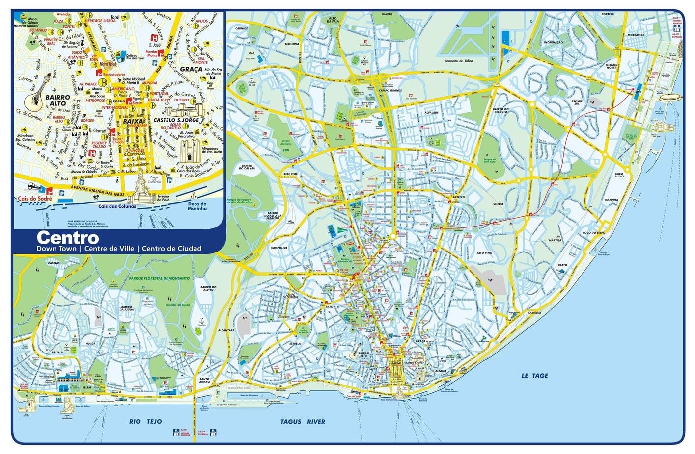
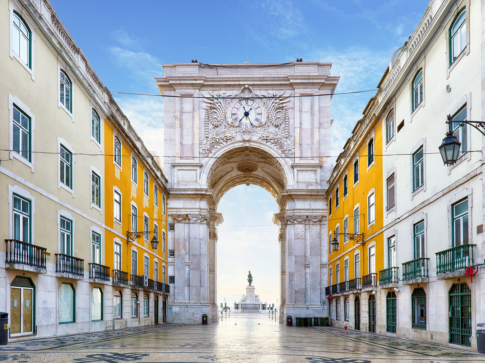

Местоположение

Лисабон е столица и най-голям град на Португалия с население (2001 г.) на града 564 477 жители, а агломерацията – около 2 700 000 души. Разположен е при вливането на река Тежу в Атлантическия океан.
История
Основан като финикийска или гръцка колония, след завладяването от
римляните градът е включен в провинция Лузитания. Завладян е от маврите около 711 и е превзет отново през 1147 от Афонсу Енрикеш, първият крал на Португалия. Лисабон става столица на страната през 1260, а през 1290 е основан Лисабонският университет.
Лисабон достига своя най-голям разцвет през 16 век, по време на Португалската империя. Той се превръща в европейски център
на търговията с Азия, като в същото време в него се излива златото, произвеждано в Бразилия. Този подем не е прекъснат и от тежкото земетресение на 26 януари 1531, при което загиват хиляди жители на града.
Забележителности
Лисабон- още една от европейските столици с впечатляваща архитектура, стара история, богата култура и много зелени кътчета. Ако решите да отидете на почивка или екскурзия в Португалия, това е мястото!
Португалия е наричана „Краят на Европа“ и не само заради географското си местоположение, а и заради цялостната й атмосфера- обликът й е вдъхновен по-скоро от задокеанските й колонии, от колкото от европейските съседи.
Ще представим и 12 от най-ключовите забележителности на града, които не трябва да пропускате:

- Площад на търговията
- Манастира "Жеронимуш"
- Крепостта и кулата Белем
- Национален музей на керамичните плочки-азулежу
- Замъкът Свети Георги
- Музеят на фадото
- Музеят на Калуст Гулбенкян
- Парка на нациите
- Асансьор Санта Жуста
- Океанариума
- Трамвай 28
- Синтра